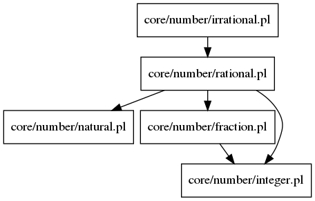

Documentation for Prolog file: irrational.pl
This file contains the definition of irrational numbers.

Included files:
rational.html
Predicates:
irrational/1
Predicate Details:
irrational/1
Form:
irrational(
A
)
Description:
A
is an irrational number if it is not a rational number.
Generated with DYP